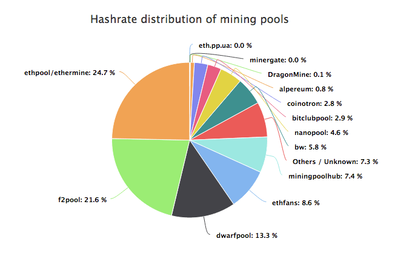

Day16|關於挖礦的兩三事(1)：原理應用與礦池
挖礦
在結束完充滿數學又落落長的密碼學初探後，我們先進到比較應用的挖礦稍微喘口氣。先回憶一下我們在第三天所寫的簡易區塊鏈中是這樣挖掘新區塊的：不停計算nonce值，直到我們能夠找到一個符合當下難度的解的nonce。這個過程中如果擁有越強的運算力(or越多的機台)，找到解的機會就越大、獲得的區塊獎勵也會越豐厚。
但這樣會有個問題：如果挖礦的人越來越多，那麼單人/單機挖到區塊的機率也會越來越低，也無法匹敵擁有巨型運算能力的專業戶，那麼區塊鏈圈的大家該如何應對這種情形呢？
while new_block.hash[0: self.difficulty] != '0' * self.difficulty:
new_block.nonce += 1
new_block.hash = self.get_hash(new_block, new_block.nonce)
原生的挖礦
實際上的區塊鏈在使用者clone並同步完主節點的資料與程式碼後通常裏頭都會內建挖礦的指令，比方說你可以透過用來安裝或同步節點的geth挖礦，而Bitcoin原本跑節點的程式也有提供使用CPU挖礦的功能，但因為CPU挖礦在SHA-256已經毫無競爭力，所以其原生的挖礦程式已經被移除掉。
挖礦方式演變
既然挖礦有利潤，就會有人想要改進原本的挖礦效能與方式，於是坊間各種優化、加速挖礦演算法的軟體與方式也逐漸有人在開發，這裡我們簡單說明一下挖礦方式的演進。
Solo Mining
最古早的挖礦是以單機為單位的，也就是每個機台獨自營運與挖礦，在初期Bitcoin礦工稀少的狀況下大家都是用Solo Mining起家的。Solo Mining的定義是不依靠任何外力幫助或是參與任何集體挖礦的計畫(像是底下提到的礦池)，所以通常自身也會營運一個節點以供新區塊的廣播之用，也因為沒有任何外力幫助，Solo Mining挖到區塊的所產生獎勵也不需要跟別人分配。
Proxy挖礦
但隨著挖礦的人越來越多，如果你手上還是只有一台機器，那恐怕挖到天花地老也無法挖出新區塊，以Bitcoin為例每年大約出產五萬多個新區塊，如果你的算力不到全網算力的五萬分之一，那恐怕挖一年也挖不出任何東西。於是第一個解決方案就是Proxy(代理伺服器)：

Proxy的原理就是眾多機台使用一台Server來轉發封包，這樣對外界而言，就好像所有的資訊都是從這台Proxy Server出來，也就是可以讓多人使用同一個Proxy Server達到把許多機器合而為一一起挖礦的效果。
礦池挖礦
隨著挖礦的人越來越多，開放式、可以自由加入的挖礦方式─礦池也就出現，目前以礦池為單位的挖礦方式已經成為主流，礦池可以分配工作給所有參與人，再把所有機器的工作成果加總起來(下圖)，並同時記錄所有機器的貢獻度，再依據貢獻程度分配挖礦的收益。

圖片來源：Coinrevolution.com
但這樣的方式也引起了一些批評與爭議，目前主要的區塊產出通通都是由礦池負責，下圖是今年Ethereum各大礦池挖出新區塊的比例：

圖片來源：buybitcoinworldwide
前三大礦池(Eth-Pool、F2Pool、Dwarf Pool)就佔據了超過50%的的算力，原先以去中心化為號招的區塊鏈，卻因為礦池似乎又變成中心化了？
Stratum的出現
在礦池的出現並且一步步成為主流方式的背景裡，Stratum的出現功不可沒，Stratum讓想要參與挖礦的礦工不再需要營運一個完整的節點、也不需要去驗證或取得每筆交易的打包或驗證，只需要承擔礦池所分派計算哈希值的工作即可，極大的減少了礦工參與挖礦的門檻。
在Bitcoin Org裏頭有這一段話敘述了Stratum的功用：
Unlike getblocktemplate, miners using Stratum cannot inspect or add transactions to the block they’re currently mining. Also unlike getblocktemplate, the Stratum protocol uses a two-way TCP socket directly, so miners don’t need to use HTTP longpoll to ensure they receive immediate updates from mining pools when a new block is broadcast to the peer-to-peer network.
自己建礦池
網路上目前已經有開放原始碼的礦池，也因此目前要建立一個礦池的門檻非常低，但相對而言建立礦池比較需要的是資安方面的人才，畢竟如果礦池被攻破，礦池所持有的虛擬貨幣與帳本都會暴露在攻擊者的掌控下，此外，因為挖礦通常都是24小時不停運作，如何維持礦池的穩定進行也是另外的議題。
建一個ETH礦池需要有多少算力
但建礦池不難，也要有人來挖呀！需要多少算力才可以支撐起一個礦池？這個問題就會使用到一點高中數學的概念，假設你擁有全網算力的x(0≦x≦1)，那麼每次出塊你搶到的機會大約也是x、沒有搶到的機會是1-x。也就是說連續q塊沒搶到的機率p會是：
根據出塊時間可以反推每天的總出塊數目，像Ethereum平均15秒出一塊、Bitcoin平均600秒出一塊去推估Ethereum一天可以產生約5760塊、Bitcoin則是只有144塊，因此Ethereum每天至少出一塊的機率為1-(1-x)^5760。
我在這個網站把式子打出來，有興趣可以參考一下，你只需要調整出塊時間(秒)、希望多久出一塊(天)，該網頁就會自動把你有多少算力時每天至少出一塊的機率圖形繪製出來，實際操作會看到下面這些圖(橫軸代表持有算力是全網算力的10^-n)，以Ethereum為例：

在機率=0.99的狀態下，n大約為-3.097，大約需要0.08%的全網算力。
以Bitcoint出塊時間600秒/10分鐘為例：

在機率=0.99的狀態下，n大約為-1.502，大約需要3.15%的全網算力。
那如果你同樣擁有Bitcoin、Ethereum各0.1%的全網算力，那麼Bitcoin每天至少挖到一塊的機率是13.4%，然而對於Ethereum，同樣情形下卻有99.7%的機率，幾乎能保證每天至少會挖到一塊。
在期望每天有99%機率會出一塊的前提下，建設礦池挖掘Bitcoin需要3.15%全網的算力、Ethereum只需要全網0.08%的算力，相較起來Ethereum架設礦池所需要的算力門檻低上許多，這也是為什麼自架礦池在Ethereum比較盛行的原因。
ETH的全網算力可以在這裡查詢，但其實這裡的算力並不是真正的算力，區塊鏈並沒有辦法知道有多少機器在挖礦，你看到的全網算力是透過目前難度與平均出塊時間反推出來的。
挖礦硬體
談完挖礦從Solo Mining→Proxy Ming→Pool Mining的發展後，我們來談談單機的變化，也就是挖礦用的硬體。
CPU與GPU
初始的挖礦都是在家用電腦上以CPU或GPU來進行(因為也沒別的選擇了)，相較於CPU，GPU在計算哈希上通常有著巨大的優勢，你可以到這裡查看Intel CPU的核心數目，家用的處理器一般落在4~6個核心上，你也可以到這裡看看Nvidia的GPU核心個數，通常GPU的核心數目會有數千個之多，處理器核心數目的差異可以到一千倍。
可以做個簡單的比喻，如果CPU、GPU是兩家不同的貨運行，CPU擁有的就像是4台大貨車─車數少，但每台車的運量與速度非常強大，GPU擁有的就像是4000台腳踏車─車數多，但每台車的運量與速度不佳。而挖礦就好比要去各個地方探索，直到找到寶藏為止，這時候GPU的數千台腳踏車在尋寶上就有了巨大的優勢。
FPGA
FPGA是Field Programmable Gate Array的縮寫，中文叫做"現場可程式化邏輯閘陣列"，FPGA的使用者可以根據實際上的需要跟程式碼，把程式燒進去FPGA裏頭，也就是FPGA的邏輯閘是可以被改變的，透過直接改變邏輯閘能夠讓FPGA的運算效能勝過CPU與GPU，但缺點就是異常昂貴的價格(入門版的就要價十萬起跳，對比CPU與GPU一兩萬的價格)。也因為這個特性通常拿來做IC設計時的驗證，確保實際投產時不會出錯(一投產就十億起跳了，萬萬不能出任何差錯)。
如果使用FPGA來挖礦，速度上會勝過CPU與GPU，但同時算法又可以更改的，也因此在分類上通常會把FPGA介於家用的CPU、GPU與等等會提到的ASIC中間。

圖片來源：Xilink
ASIC(Application-Specific Integrated Circuit)
一般的CPU架構是偏向複雜指令集(CISC)計算、GPU架構偏向簡單指令集(RISC)，會說偏向是因為CPU與GPU裡還是有架構的不同，並沒有一定，像常聽到的ARM架構CPU反而就偏向RISC。
複雜指令集的處理核心可以想像成裏頭有許多複雜的基本語法，簡單指令集的處理核心裏頭是由多種簡單的基本語法構成，比方說複雜指令集裏頭已經有乘法的指令，同時該指令還可以幫助你做記憶體的讀取跟寫入，也就是乘法只需要一個指令集就可以完成；但簡單指令集就只能拆成讀取記憶體、乘法、寫入記憶體三個指令集完成。(CISC與RISC兩者的差異可以參考這裡)，總之在CPU、GPU裏頭所有的運算都會被拆成基礎指令集去完成(不過GPU有部分運算會交給電路直接去實作)。
但ASIC不一樣，他把大部分的計算直接透過電路去完成，也就是在設計電路時就把電路直接設計成可進行該運算的模式，透過這種設計方式達到運算時大幅度的效能增加與供耗減少，但也因為它的電路設計是根據某種特定的演算法，因此無法從事其他運算，只能說ASIC是Born to mine. 為挖礦而生的硬體，也是特殊應用積體電路(Application-Specific Integrated Circuit，ASIC)名稱的由來。
對於Bitcoin挖礦而言，ASIC的出現輾過了所有CPU與GPU，讓CPU與GPU挖礦不再有效益，也導致了挖礦硬體極度中心化，因為ASIC的生產主要由幾家ASIC製造商(像是Bitmain、Baikal、Halong Mining......等)所壟斷，生產礦機、經營礦池一條龍的產業讓比特大陸(Bitmain)一間公司甚至掌握了過半的算力(來源)。為了對抗這種情形社群也有許多應對─包含開發不適合ASIC的演算法、或是更迭參數等，至於如何對抗ASIC則是我們明日介紹的重點。
到目前為止的文章都會放置在Github上。